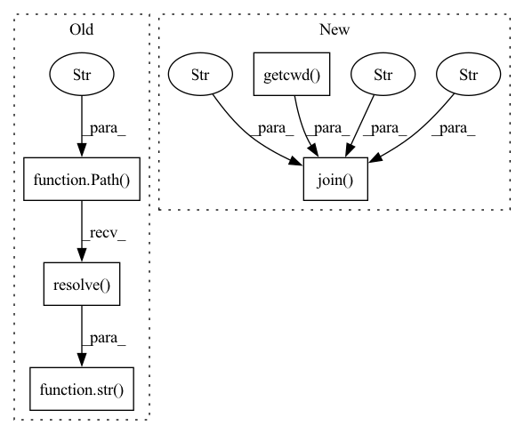

Pattern ID :4771

Before Change
assert img.shape == scaled_img.shape
def test_pad_to_square(self):
img_path = str(Path("tests/resources/SENSE.png").resolve())
img = cv2.imread(img_path)
max_length = max(img.shape[0:2])
new_img = self.video.pad_to_square(img)
assert new_img.shape == (max_length, max_length, 3)
After Change
assert img.shape == scaled_img.shape
def test_pad_to_square(self):
img_path = os.path.join(os.getcwd(), "tests", "resources", "SENSE.png")
img = cv2.imread(img_path)
max_length = max(img.shape[0:2])
new_img = self.video.pad_to_square(img)
assert new_img.shape == (max_length, max_length, 3)
In pattern: SUPERPATTERN
Frequency: 3
Non-data size: 5
Instances
Fragment ID: 16886721
Project Name: twentybn/sense
Commit Name: 86910a39a6576a14e2a849650537ecb4eea9adf7
Time: 2021-03-04
Author: yujie.hu@twentybn.com
File Name: tests/test_camera.py
M Class Name: TestVideoSource
N Class Name: TestVideoSource
M Method Name: test_pad_to_square(1)
N Method Name: test_pad_to_square(1)
M Parent Class: unittest.TestCase
N Parent Class: unittest.TestCase
M File Name: tests/test_camera.py
N File Name: tests/test_camera.py
M Start Line: 28
M End Line: 28
N Start Line: 28
N End Line: 28
'>
Before Change
class TestVideoWriter(unittest.TestCase):
def setUp(self) -> None:
self.output_video_path = str(Path("tests/resources/test_writer.mp4").resolve())
self.videowriter = camera.VideoWriter(path=self.output_video_path, fps=12.0, resolution=(40, 30))
def test_write(self):
input_video_path = video_path
After Change
class TestVideoWriter(unittest.TestCase):
def setUp(self) -> None:
self.output_video_path = os.path.join(os.getcwd(), "tests", "resources", "test_writer.mp4")
self.videowriter = camera.VideoWriter(path=self.output_video_path, fps=12.0, resolution=(40, 30))
def test_write(self):
input_video_path = VIDEO_PATH
'>
Fragment ID: 16886723
Project Name: twentybn/sense
Commit Name: 86910a39a6576a14e2a849650537ecb4eea9adf7
Time: 2021-03-04
Author: yujie.hu@twentybn.com
File Name: tests/test_camera.py
M Class Name: TestVideoWriter
N Class Name: TestVideoWriter
M Method Name: setUp(1)
N Method Name: setUp(1)
M Parent Class: unittest.TestCase
N Parent Class: unittest.TestCase
M File Name: tests/test_camera.py
N File Name: tests/test_camera.py
M Start Line: 64
M End Line: 64
N Start Line: 64
N End Line: 64
'>
Before Change
@patch("sense.camera.VideoSource.pad_to_square")
def test_get_image(self, mock_pad_to_square):
square_img_path = str(Path("tests/resources/square_SENSE.png").resolve())
square_img = cv2.imread(square_img_path)
mock_pad_to_square.return_value = square_img
img, scaled_img = self.video.get_image()
self.assertTrue(mock_pad_to_square)
After Change
@patch("sense.camera.VideoSource.pad_to_square")
def test_get_image(self, mock_pad_to_square):
square_img_path = os.path.join(os.getcwd(), "tests", "resources", "square_SENSE.png")
square_img = cv2.imread(square_img_path)
mock_pad_to_square.return_value = square_img
img, scaled_img = self.video.get_image()
self.assertTrue(mock_pad_to_square)
'>
Fragment ID: 16886715
Project Name: twentybn/sense
Commit Name: 86910a39a6576a14e2a849650537ecb4eea9adf7
Time: 2021-03-04
Author: yujie.hu@twentybn.com
File Name: tests/test_camera.py
M Class Name: TestVideoSource
N Class Name: TestVideoSource
M Method Name: test_get_image(2)
N Method Name: test_get_image(2)
M Parent Class: unittest.TestCase
N Parent Class: unittest.TestCase
M File Name: tests/test_camera.py
N File Name: tests/test_camera.py
M Start Line: 20
M End Line: 20
N Start Line: 20
N End Line: 20